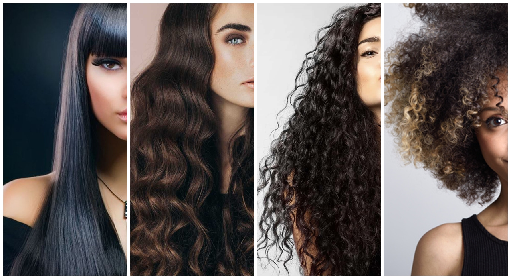

Cabelos
O cabelo ideal para o seu rosto é aquele que faz você se sentir bem!
Tipos de cabelos: Lisos, Ondulados, Cacheados, Crespos.
Cabelos Lisos

Cuidados:
1-Penteie os cabelos com cuidado, ou seja, dê preferência aos pentes de madeira e de cerdas largas.
2- Alimentação saudável e balanceada.
3- Ademais, use produtos que combatem o frizz.
4- A saber, é bom sempre manter os fios limpos.
5- Outra dica muito importante é sempre hidratar os cabelos.
6- Evite passar hidratantes na raiz do cabelo.
7- Por fim, escolha os produtos certos para tratar os cabelos.
Cabelos Ondulados

Cuidados:
1- Optar por fazer cronograma capilar (hidratação, nutrição e restauração).
2- Evitar lavar os fios com água quente para não ressecar.
3- Pentear com o cabelo úmido de preferência, para evitar a quebra dos fios.
4- Evitar ficar passando muito a mão nos fios, para evitar o frizz.
5- Para destacar as ondas, aprenda técnicas de finalização e aposte em cremes de pentear hidratantes e nutritivos.
Cabelos Cacheados

Cuidados:
1– Não lave os cablos todos os dias.
2- Use produtos específicos.
3- Seque os fios com tecido de algodão.
4- Faça o cronograma capilar.
5- Use um pente próprio para cachos.
6- Tenha uma fronha de cetim.
7- Deixe o cabelo secar naturalmente.
Cabelos Crespos

Cuidados:
1- Evite tomar banhos muito quentes,o ideal é lavar com água morna.
2- Pré-Lavagem: O uso de óleo de tratamento antes do shampoo e condicionador.
3- Faça o cronograma capilar.
4- Desembarace o cabelo crespo úmido, de preferência com um creme para pentear.
5- Use um lenço de seda ou cetim.